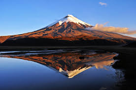
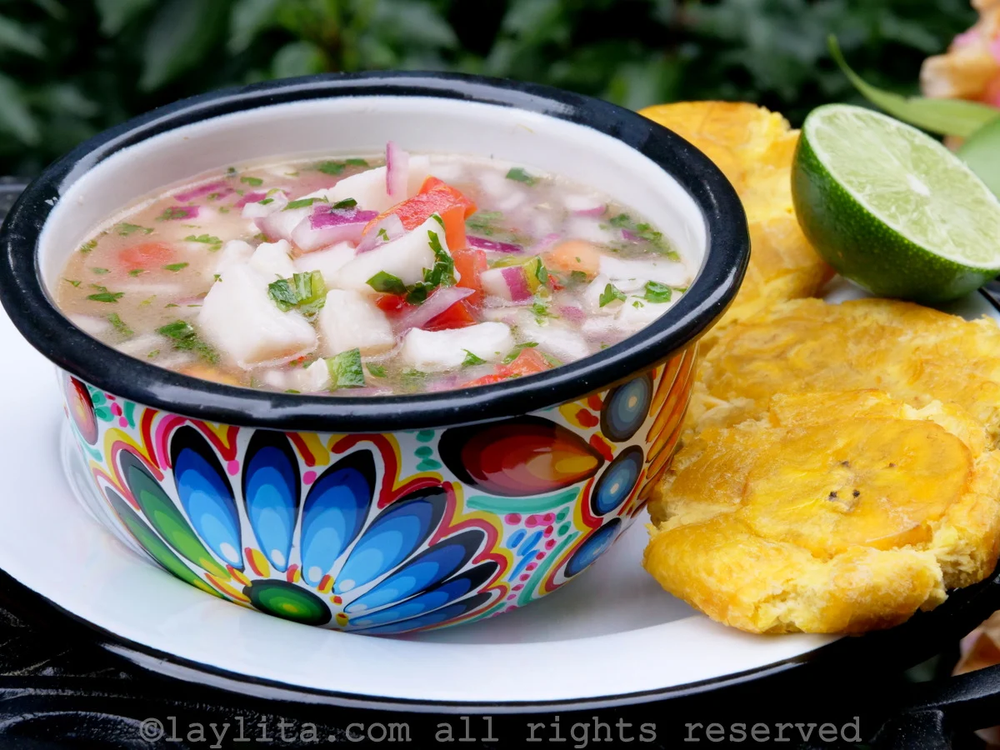
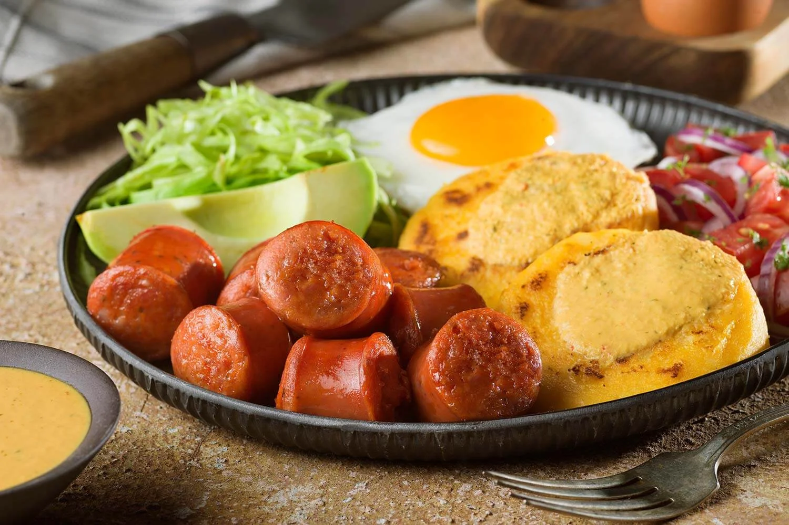
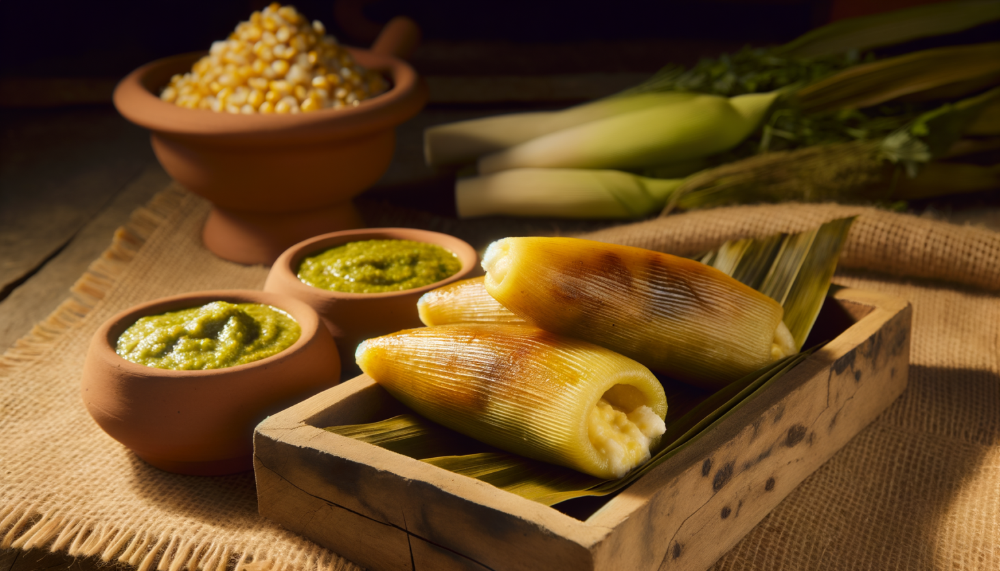

Diverse landscapes
Andes highlands, Amazon rainforest, Pacific coast, and the unique wildlife and ecosystems offer enormous variety in one relatively small country — from volcano treks to island wildlife encounters.

Andes highlands, Amazon rainforest, Pacific coast, and the unique wildlife and ecosystems offer enormous variety in one relatively small country — from volcano treks to island wildlife encounters.
Historic sites, indigenous markets, and lively local traditions provide authentic cultural experiences and opportunities to engage with local communities and craftspeople.
From seafood ceviche on the coast to hearty Andean dishes and street snacks, Ecuador’s regional foods (and fresh tropical fruits) are a highlight for food-loving travelers.
U.S. dollar (USD)
Spanish & indigenous languages
June–September (Andes drier)
Quito
1534 (Quito Spanish founding)
~17 million (estimate)

Colonial architecture and mountain views — the historic center of Quito is one of the best-preserved in the Americas with plazas, churches, and elevated viewpoints. Use Quito as a base to explore nearby volcanic landscapes and cultural sites.

Adventure sports and waterfalls — a hub for outdoor activities like rafting, canyoning, and hiking to waterfalls. Baños is compact and lively, with thermal baths and many tour operators offering daily excursions.

Unique wildlife and volcanic islands — a once-in-a-lifetime wildlife experience with endemic species, snorkel opportunities, and guided island tours. Plan in advance for permits, cruises, or island-hopping itineraries.

Explore lush waterways and jungle wildlife in Ecuador’s Amazon basin — guided lodges offer safe wildlife spotting, canoe trips, and cultural visits with indigenous communities.

Hike around one of the world's highest active volcanoes, with glacier views and highland páramo landscapes — great for day trips from Quito or as part of a multi-day trek.
Choose timing by region: Andes drier June–September; coast warmer Dec–May; Amazon is rainy year-round but accessible.

Ceviche on the coast is fresh and citrusy; encebollado (fish soup) is a hearty breakfast favorite in coastal towns. Try it with plantain chips and plenty of lime.

In the highlands, seek hornado (roast pork) served with llapingachos (cheesy potato patties). These are often accompanied by curtido (pickled onions) and spicy aji sauce.

Humita is a steamed corn cake; bolón is a fried plantain ball often filled with cheese or pork. Both are popular street food breakfasts across Ecuador.
Ecuador can work well for a broad range of travelers. Families will find beach and nature activities suitable for children, while cultural travelers and couples will enjoy historic centers and cultural markets. Adventure and outdoor travelers will love trekking in the Andes, river trips in the Amazon, and wildlife on the Galápagos.
Infrastructure varies — major cities like Quito and Guayaquil have good medical facilities, taxis, and hotels with accessibility features; however, rural areas and some historic centers have uneven sidewalks, steps, and limited ramp access. If you or someone in your party has mobility requirements, contact hotels and tour operators in advance to confirm accessible rooms, vehicle options, and assistance. For travelers sensitive to altitude, plan slow acclimatization in highland destinations, avoid strenuous activity on arrival, and carry any necessary medications. For families and solo travelers, standard safety precautions apply: keep copies of travel documents, use reputable transport, and ask local hosts for current advice on neighborhoods and weather-related travel conditions.